OAuth是一种用来规范令牌（Token）发放的授权机制，主要包含了四种授权模式：授权码模式、简化模式、密码模式和客户端模式。Spring Security OAuth2对这四种授权模式进行了实现。这节主要记录下什么是OAuth2以及Spring Security OAuth2的基本使用。
四种授权模式
在了解这四种授权模式之前，我们需要先学习一些和OAuth相关的名词。举个社交登录的例子吧，比如在浏览器上使用QQ账号登录虎牙直播，这个过程可以提取出以下几个名词：
Third-party application 第三方应用程序，比如这里的虎牙直播；
HTTP service HTTP服务提供商，比如这里的QQ（腾讯）;
Resource Owner 资源所有者，就是QQ的所有人，你；
User Agent 用户代理，这里指浏览器；
Authorization server 认证服务器，这里指QQ提供的第三方登录服务；
Resource server 资源服务器，这里指虎牙直播提供的服务，比如高清直播，弹幕发送等（需要认证后才能使用）。
认证服务器和资源服务器可以在同一台服务器上，比如前后端分离的服务后台，它即供认证服务（认证服务器，提供令牌），客户端通过令牌来从后台获取服务（资源服务器）；它们也可以不在同一台服务器上，比如上面第三方登录的例子。
大致了解了这几个名词后，我们开始了解四种授权模式。
授权码模式
授权码模式是最能体现OAuth2协议，最严格，流程最完整的授权模式，流程如下所示：
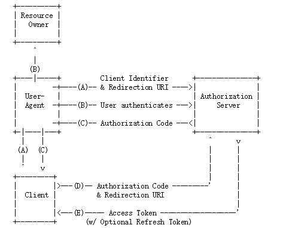
A. 客户端将用户导向认证服务器；
B. 用户决定是否给客户端授权；
C. 同意授权后，认证服务器将用户导向客户端提供的URL，并附上授权码；
D. 客户端通过重定向URL和授权码到认证服务器换取令牌；
E. 校验无误后发放令牌。
其中A步骤，客户端申请认证的URI，包含以下参数：
response_type：表示授权类型，必选项，此处的值固定为”code”，标识授权码模式
client_id：表示客户端的ID，必选项
redirect_uri：表示重定向URI，可选项
scope：表示申请的权限范围，可选项
state：表示客户端的当前状态，可以指定任意值，认证服务器会原封不动地返回这个值。
D步骤中，客户端向认证服务器申请令牌的HTTP请求，包含以下参数：
grant_type：表示使用的授权模式，必选项，此处的值固定为”authorization_code”。
code：表示上一步获得的授权码，必选项。
redirect_uri：表示重定向URI，必选项，且必须与A步骤中的该参数值保持一致。
client_id：表示客户端ID，必选项。
密码模式
在密码模式中，用户像客户端提供用户名和密码，客户端通过用户名和密码到认证服务器获取令牌。流程如下所示：
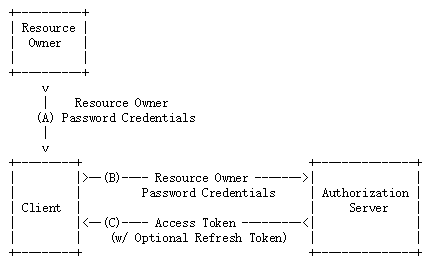
A. 用户向客户端提供用户名和密码；
B. 客户端向认证服务器换取令牌；
C. 发放令牌。
B步骤中，客户端发出的HTTP请求，包含以下参数：
grant_type：表示授权类型，此处的值固定为”password”，必选项。
username：表示用户名，必选项。
password：表示用户的密码，必选项。
scope：表示权限范围，可选项。
剩下两种授权模式可以参考下面的参考链接，这里就不介绍了。
Spring Security OAuth2
Spring框架对OAuth2协议进行了实现，下面学习下上面两种模式在Spring Security OAuth2相关框架的使用。
Spring Security OAuth2主要包含认证服务器和资源服务器这两大块的实现：
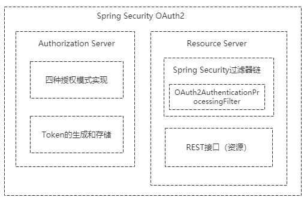
认证服务器主要包含了四种授权模式的实现和Token的生成与存储，我们也可以在认证服务器中自定义获取Token的方式（后面会介绍到）；资源服务器主要是在Spring Security的过滤器链上加了OAuth2AuthenticationProcessingFilter过滤器，即使用OAuth2协议发放令牌认证的方式来保护我们的资源。
配置认证服务器
新建一个Spring Boot项目，版本为2.1.6.RELEASE，并引入相关依赖，pom如下所示：
1 |
|
在创建认证服务器前，我们先定义一个MyUser对象：
1 | public class MyUser implements Serializable { |
接着定义UserDetailService实现org.springframework.security.core.userdetails.UserDetailsService接口：
1 |
|
这里的逻辑是用什么账号登录都可以，但是密码必须为123456，并且拥有”admin”权限（这些都在前面的Security教程里说过了，就不再详细说明了）。
接下来开始创建一个认证服务器，并且在里面定义UserDetailService需要用到的PasswordEncoder。
创建认证服务器很简单，只需要在Spring Security的配置类上使用@EnableAuthorizationServer注解标注即可。创建AuthorizationServerConfig，代码如下所示：
1 |
|
这时候启动项目，会发现控制台打印出了随机分配的client-id和client-secret：
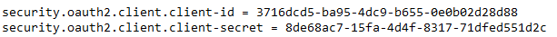
为了方便后面的测试，我们可以手动指定这两个值。在Spring Boot配置文件application.yml中添加如下配置:
1 | security: |
重启项目，发现控制台输出：
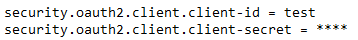
说明替换成功。
授权码模式获取令牌
接下来开始往认证服务器请求授权码。打开浏览器，访问http://localhost:8080/oauth/authorize?response_type=code&client_id=test&redirect_uri=http://mrbird.cc&scope=all&state=hello
URL中的几个参数在上面的授权码模式的A步骤里都有详细说明。这里response_type必须为code，表示授权码模式，client_id就是刚刚在配置文件中手动指定的test，redirect_uri这里随便指定一个地址即可，主要是用来重定向获取授权码的，scope指定为all，表示所有权限。
访问这个链接后，页面如下所示：
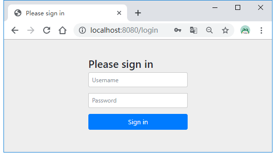
需要登录认证，根据我们前面定义的UserDetailService逻辑，这里用户名随便输，密码为123456即可。输入后，页面跳转如下所示：
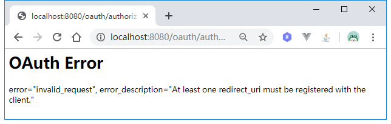
原因是上面指定的redirect_uri必须同时在配置文件中指定，我们往application.yml添加配置：
1 | security: |
重启项目，重新执行上面的步骤，登录成功后页面成功跳转到了授权页面：
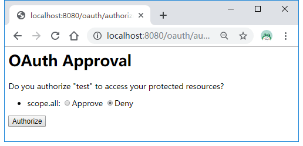
选择同意Approve，然后点击Authorize按钮后，页面跳转到了我们指定的redirect_uri，并且带上了授权码信息:
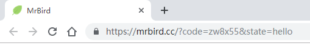
到这里我们就可以用这个授权码从认证服务器获取令牌Token了。
使用postman发送如下请求POST请求localhost:8080/oauth/token：
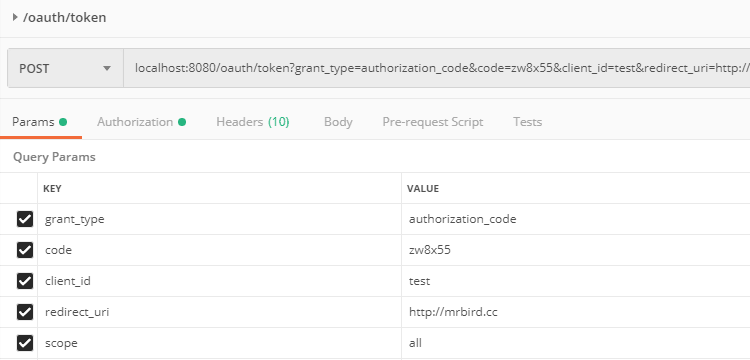
这里要填的参数和上面介绍的授权码模式D步骤介绍的一致。grant_type固定填authorization_code，code为上一步获取到的授权码，client_id和redirect_uri必须和我们上面定义的一致。
除了这几个参数外，我们还需要在请求头中填写：
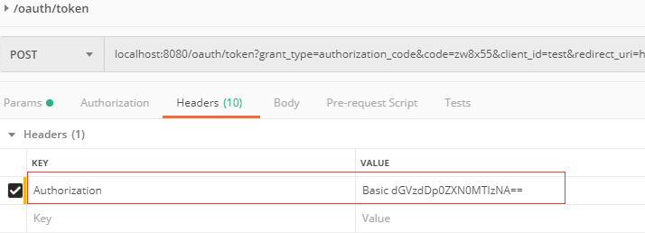
key为Authorization，value为Basic加上client_id:client_secret经过base64加密后的值（可以使用http://tool.chinaz.com/Tools/Base64.aspx）:
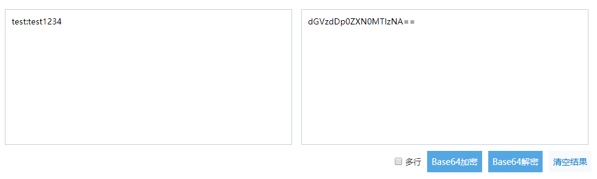
参数填写无误后，点击发送便可以获取到令牌Token：
1 | { |
一个授权码只能换一次令牌，如果再次点击postman的发送按钮，将返回：
1 | { |
密码模式获取令牌
和授权码模式相比，使用密码模式获取令牌就显得简单多了。同样使用postman发送POST请求localhost:8080/oauth/token：
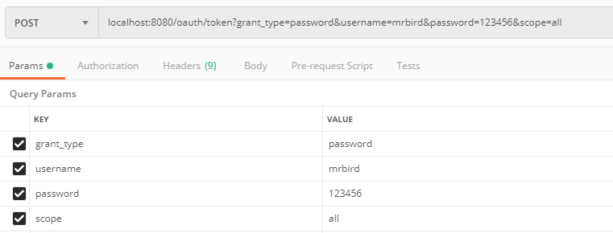
grant_type填password，表示密码模式；然后填写用户名和密码，头部也需要填写Authorization信息，内容和授权码模式介绍的一致，这里就不截图了。
点击发送，也可以获得令牌：
1 | { |
配置资源服务器
为什么需要资源服务器呢？我们先来看下在没有定义资源服务器的时候，使用Token去获取资源时会发生什么。
定义一个REST接口：
1 |
|
启动项目，为了方便我们使用密码模式获取令牌，然后使用该令牌获取/index这个资源：
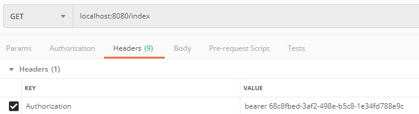
Authorization值为token_type access_token，发送请求后，返回：
1 | { |
虽然令牌是正确的，但是并无法访问/index，所以我们必须配置资源服务器，让客户端可以通过合法的令牌来获取资源。
资源服务器的配置也很简单，只需要在配置类上使用@EnableResourceServer注解标注即可：
1 |
|
重启服务，重复上面的步骤，再次访问/index便可以成功获取到信息：
1 | { |
在同时定义了认证服务器和资源服务器后，再去使用授权码模式获取令牌可能会遇到 Full authentication is required to access this resource 的问题，这时候只要确保认证服务器先于资源服务器配置即可，比如在认证服务器的配置类上使用@Order(1)标注，在资源服务器的配置类上使用@Order(2)标注。
源码链接：https://github.com/wuyouzhuguli/SpringAll/tree/master/63.Spring-Security-OAuth2-Guide